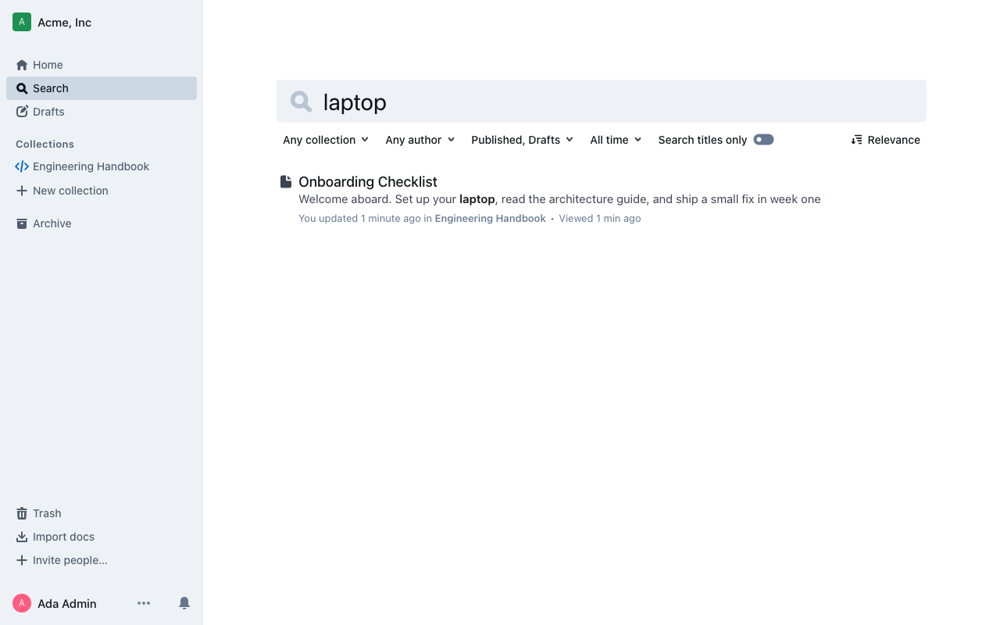

Khung tập hợp đầu vào cho issue #27 · Cập nhật 13/10/2026 · Người tổng hợp: Nguyễn Hoài Nam. Hạn nội bộ: 30/11/2026.
Tài liệu này là khung biên tập. Kết quả thử nghiệm, số đo, lỗi, RCA và xác nhận của từng tác giả chỉ được điền sau khi có bằng chứng. Bản cuối cần được cả ba thành viên duyệt và chốt lịch nộp theo ngày bảo vệ thực tế.
| Phần | Chủ trì theo kế hoạch nhóm | Đầu vào đã có | Phần còn thiếu / cần xác nhận |
|---|---|---|---|
| A · Mục tiêu và phạm vi hệ thống | Đình Hiếu | Codebase Guide: cây module, bốn luồng; README: giới thiệu Outline. | Actor/use case và mô tả phạm vi được tác giả xác nhận; đối chiếu với deliverable A của #13. |
| B · Kiến trúc | Đình Hiếu | Sơ đồ container/component và mô tả luồng; kiến trúc upstream. | Chốt 3–5 module liên quan test, chú thích hình và nguồn; Hiếu duyệt bản cuối. |
| C · Môi trường và chạy hệ thống | Hoài Nam theo kế hoạch nhóm; issue #10 giao Thái Anh | Onboarding: phiên bản, biến môi trường, build/migrate, ba luồng có ảnh. | Chốt người viết giữa kế hoạch và issue; thêm bằng chứng cold run trên Windows/Linux và kết quả đúng SHA dùng trong báo cáo. |
| D · K16 và tiêu chí | Đình Hiếu | Kế hoạch nhóm 30/09: dependency thật, ngoài phạm vi OAuth/UI, API + DB, chạy lại 3 lần; bản nháp kỹ thuật. | Bản kỹ thuật đã duyệt từ #14, giả định/rủi ro, ngưỡng pass/fail chính thức. |
| E · Test scenario | Đình Hiếu, phối hợp Thái Anh; issue #22 giao Hoài Nam | Bảng scenario bản nháp và test mẫu users.update: tạo user, HTTP 200, kiểm tra tên trong DB; test dọn dữ liệu. | Bảng input/tiền điều kiện/kết quả mong đợi/dữ liệu cho từng test luồng 1 và 3 sau khi PR của Thái Anh có mặt; Hiếu review. |
| F · Harness và cách chạy | Thái Anh; issue #21 giao Hoài Nam phần README | Testcontainers, global setup, lệnh chạy một dòng. | Chốt đủ 5–6 test, teardown/cleanup ổn định, ba lần chạy liên tiếp và thông tin phiên bản chốt. |
| G · Kết quả, lỗi và RCA | Thái Anh | Ngày 13/10: yarn test:integration trên Windows chạy 1 file, 2 test pass (219.95 giây). Đây là kết quả sơ bộ, chưa phải số cuối. | Log, coverage, số lần lặp, bảng lỗi và RCA hoặc lý giải khi không phát hiện lỗi. |
| H · Tái lập trên máy sạch | Hoài Nam | Hướng dẫn cold run và SHA gốc 05ef55e. Bản fork hiện hành khi lập khung: 37495b3ce. | Chốt SHA cuối để tránh lẫn bản gốc và bản có harness; chạy từ fresh clone trên máy sạch theo #24, lưu ảnh/lệnh/log và issue cho mọi lỗ hổng hướng dẫn. |
Outline là knowledge base cộng tác cho nhóm. Trong phạm vi kiểm thử, admin và thành viên thao tác với team, collection, document, revision, tìm kiếm và share link. Mã nguồn gồm app/ (React), server/ (Koa API), shared/ và plugins/. Kế hoạch nhóm giới hạn ở document workflow để xây 5–6 integration test ổn định.
Còn thiếu: actor/use case chính thức và xác nhận phạm vi của tác giả phần A.
Frontend React/Vite gọi Koa API; request đi qua xác thực và policy trước khi command/model thao tác PostgreSQL. Redis phục vụ queue và các thành phần thời gian thực. Codebase Guide hiện có sơ đồ container, component và bốn luồng dữ liệu; phần báo cáo cuối cần trích hình có chú thích và giải thích document, collection, revision, search.
Còn thiếu: sơ đồ đã được duyệt, danh sách 3–5 module và mô tả luồng khớp test thực tế.
Bản onboarding hiện có dùng Node 22.23.0, Yarn 4.18.1, PostgreSQL 17 và Redis 8. Các bước chính là bật Docker, cài dependency, tạo .env, build server, migrate và chạy ứng dụng. Ba luồng đã được ghi ảnh trên macOS: tạo workspace, tạo collection/document và tìm kiếm, mời người thứ hai cộng tác.

Còn thiếu: bằng chứng chạy đúng bản SHA chốt trên máy thứ hai; chốt chủ sở hữu nội dung C giữa kế hoạch nhóm và issue #10.
Testcontainers dựng PostgreSQL và Redis thật cho mỗi lần chạy suite, thay cho dependency giả lập. Phạm vi loại OAuth/OIDC/email login, attachment và UI; user/team được tạo bằng factory. Tiêu chí dự kiến: mỗi test kiểm tra API và DB, độc lập sau cleanup, chạy ba lần liên tiếp không flaky. Rủi ro chính là Docker không sẵn sàng, migration chậm và trạng thái chia sẻ gây nhiễu test.
Còn thiếu: bản giải thích/giới hạn và tiêu chí pass/fail được duyệt từ issue #14.
Bảng scenario đã có input, tiền điều kiện, kết quả mong đợi và dữ liệu test cho hai test hiện hữu của user/team. Các kịch bản quyền collection, revision, search và share link được ghi là dự kiến.
Còn thiếu: thay các hàng dự kiến bằng assertion đúng từ PR test luồng 1 và 3; người review xác nhận.
server/test/containers.ts dựng Postgres/Redis; global setup truyền connection string cho Vitest; cleanup xóa dữ liệu giữa test. README đã có một lệnh yarn test:integration. Ngày 13/10 suite hiện có một file với hai test.
Còn thiếu: đủ 5–6 test theo phạm vi, kết quả chạy ba lần liên tiếp và xác nhận CI.
Chạy cục bộ ngày 13/10/2026 trên Windows từ D:\outline-k16\repo: Test Files 1 passed (1), Tests 2 passed (2), tổng 219.95 giây. Đây là mốc ban đầu, không đại diện kết quả cuối kỳ.
Còn thiếu: log/coverage cuối, ngưỡng đạt, ba lần lặp, danh sách lỗi và RCA (nếu có).
Đề tài pin SHA gốc 05ef55e; repo fork khi lập khung ở 37495b3ce đã có tài liệu và harness. Hướng dẫn onboarding ghi phiên bản, biến môi trường và checklist cold run. Bản cuối phải dùng một SHA thống nhất cho lệnh, ảnh và log, đồng thời giải thích sự khác nhau giữa SHA gốc và bản có test.
Còn thiếu: fresh clone trên máy sạch chỉ theo README, ảnh/lệnh/log chạy lại và issue ghi mọi khoảng trống.
05ef55e.